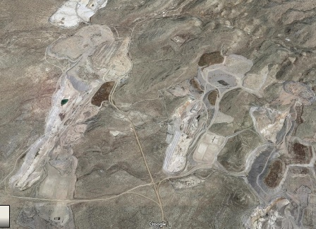

Qualcuno avrà notato che amo paragonare gli elementi ai componenti di una numerosa compagnia teatrale nella quale ogni elemento, come ogni attore, ha il suo carattere e la parte da recitare.
Come in tutte le compagnie numerose, c'è un gruppo di "protagonisti" (più o meno sempre quelli) e poi un buon numero di personaggi che recitano parti, diciamo così, secondarie, oppure che sembrano tali.
Oggi faccio recitare una di queste comparse che sta sempre dietro al gruppo e che nessuno (a parte gli addetti ai lavori) conosce.
Nemmeno negli anni d'oro dei forum di chimica sperimentale il berillio e i suoi sali hanno mai avuto più di qualche cenno e non c'è da stupire se nemmeno il mio modestissimo lab non ha purtroppo mai visto in faccia un composto di questo metallo, se non in questo componente elettronico (una resistenza per RF) che pongo qui in mancanza di meglio.

Non che ci sia un granchè da vedere nei sali di berillio, sono per lo più tutti composti bianchi senza alcun appeal cromatico; tutti sono assai velenosi.
Questo molto raro metallo si trova proprio sulla soglia della tavola periodica (appena un paio di protoni in più dell'elio!), con caratteristiche peculiari:
è estremamente leggero (1,85 g/cm3, una piuma) e con alto punto di fusione, 1287°.
Per queste e altre ancor più specifiche caratteristiche è un materiale costoso e strategico.
Ci sono in giro per il mondo miniere particolarmente curiose (ne ho già detto per il litio, il cesio e altro) ed il berillio me ne dà ancora lo spunto.
Anche nel caso di questo elemento è interessante notare che la produzione mondiale arriva, quasi tutta, da un solo giacimento!
Esso è situato alle pendici della Spor Mountain (link) nel deserto dell'Utah, in un posto, come ve ne sono tantissimi negli USA, veramente desolato.

Il principale minerale estratto è la Bertrandite, un silicato idrato di berillio Be4Si2O7(OH)2).
Ricordo che l'altro minerale di berillio è il "berillo", un silicoalluminato Be3Al2Si6O18, che nella forma cristallina trasparente costituisce nientepopodimeno che lo SMERALDO (se trasparente e verde) o l'ACQUAMARINA (se azzurrino).
[Le acquemarine mi fan sempre ricordare un paio di tremende giornate che assorbirono quand'ero studente quasi tutte le mie risorse fisiche nella caccia a questi famigerati cristallini, facendomi scarpinare assieme all'amico Danilo su e giù per l'Alpe Sivigia cercando le pegmatiti berillifere attorno al bivacco Vaninetti (ora biv. Pedroni). Forse ne accennerò in futuro].
...°°°OOO°°°...
Spor Mountain nello Utah è costituito principalmente da rocce sedimentarie del paleozoico e con faglie intricate che sono localmente introdotte in rocce vulcaniche di età terziaria e il distretto del berillio si trova sulle pendici ovest e sud-ovest della montagna.
Visto l'interesse verso il metallo, la mineralizzazione a bertrandite di Spor Mountain è stata oggetto di indagini intensive e cinque miniere a cielo aperto di proprietà della Brush Wellman Inc. alimentano il giacimento e l'impianto di lavorazione nella città più vicina (Delta, Utah).
La mineralizzazione del berillio è limitata al tufo vulcanico e i depositi di minerale sono mescolati ad argilla, feldspato, fluorite, ossidi di manganese e altro; a complicare le cose è che i depositi di berillio sono submicroscopici e disseminati nel tufo con tenore dello 0,6/0,7% di BeO, tuttavia in quantità di diversi milioni di tonnellate di bertrandite.
Le tecniche utilizzate dalla Brush Wellman Inc. per estrarre il minerale di berillio sono particolari perchè la mineralizzazione nel tufo è incolore e con struttura cristallina tanto piccola che non produce caratteristiche fisiche visibili che aiuterebbero a identificarla.
Il minerale di berillio viene quindi estratto da aree selezionate del sito e produce una miscela omogenea accettabile per le operazioni successive di arricchimento.
Le aree vengono selezionate con uno strumento detto "berilometro", un contatore a scintillazione con una sorgente di emissione di raggi gamma che quando posto in contatto con un minerale contenente Be provoca una emissione secondaria di neutroni, riconoscibili e conteggiati.
Poiché il conteggio è direttamente proporzionale al contenuto di Be del campione si può risalire alla consistenza del corpo minealizzato.
[Anche noi (io e il Danilo) avevamo due bei berilometri a neutroni quando andavamo in cerca di acquemarine in Val Codera... sotto forma di una mazza da muratore ciascuno...]
La produzione mondiale di berillio si attesta sulle poche centinaia di tonnellate annue, quindi una produzione microscopica rispetto ad altri elementi.
Gli Stati Uniti sono il leader nel mercato, con oltre l'87% della produzione totale.
Altri paesi produttori di berillio sono principalmente la Cina ed il Mozambico, ma molto in subordine.
Alcune stime prevedono che la domanda aumenterà parecchio nei prossimi decenni per le applicazioni nei futuri reattori a fusione e altri impieghi di alta tecnologia, oltre alle già note leghe con il rame, al quale il Be conferisce ottime doti meccaniche e di elasticità e la ceramica a base di ossido con eccezionali caratteristiche di conducibilità termica (esempio nella foto mostrata sopra).